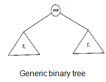
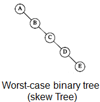
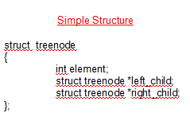
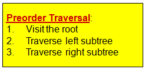
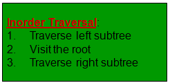
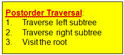
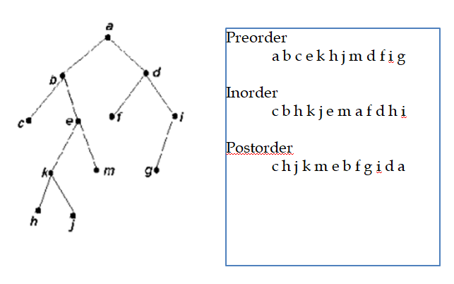

3.2 Binary Trees
- A binary tree is a tree in which no node can have more than two children.
- A node can have a left and a right child, a left child only, a right child only, or no children
- The tree made up of a left child (of a node x) and all its descendents is called the left subtree of x
- Similar with Right Subtree



3.2.1 Binary trees - Traversals
- In Preorder, the root is visited before (pre) the subtrees traversals

- In Inorder, the root is visited in-between left and right subtree traversal

- In Postorder, the root is visited after the subtrees traversals

Example
